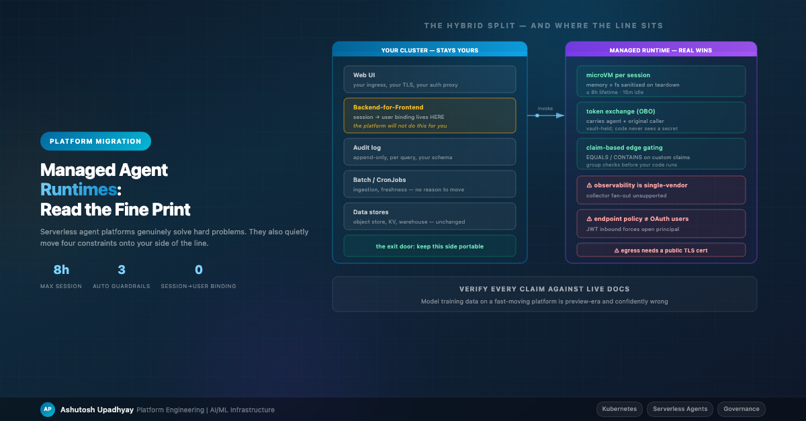

Platform MigrationI run agents on Kubernetes and evaluated moving them to a managed agent platform. Here's what genuinely improves, what quietly becomes your problem, and why a hybrid split was the honest answer.
My agents run on Kubernetes: a web UI, an API service, several specialist agent services behind internal HTTP endpoints, scheduled ingestion jobs, an auth proxy at the edge. It works. It's boring in the way production should be boring.
But four things about it are genuinely annoying, and all four are things a managed agent runtime claims to fix:
So I did a proper evaluation. The conclusion was a hybrid split rather than a migration — and the interesting part is why.
Before anything else: verify every claim against current documentation. When I started, I wrote up an assessment partly from what I already "knew" about the platform. Several points were confidently wrong — my knowledge was preview-era, and the platform had changed substantially since. Two facts I'd have staked a design on had reversed.
On fast-moving infrastructure, training-era knowledge — mine or a model's — is a liability dressed as expertise. Every load-bearing fact in this post was checked against live documentation on the day I wrote it, and I'd re-check before quoting any of it. That is the single most valuable habit in this whole exercise.
A dedicated micro-VM per session, with memory and filesystem sanitised on teardown. This is not something I can replicate meaningfully on shared Kubernetes nodes without a lot of work.
If your agent runs generated code — and any agent doing data analysis eventually does — this is the strongest single argument for a managed runtime. It converts "we're fairly sure the sandbox holds" into a platform guarantee.
The bounds are worth getting right, because I initially got them wrong in the direction that would have mis-sized a long-running pipeline. The roughly eight-hour figure is the maximum lifetime of a single compute instance, not of a session. The session itself survives compute rotation — it goes dormant, and the next invocation provisions fresh compute under the same session, remaining valid until you delete the runtime. So a research session can span days; what resets at the compute boundary is in-memory and non-persistent on-disk state, unless you attach session storage that survives stop and resume. Both the lifetime and the idle timeout are configurable rather than fixed platform ceilings. The number that actually constrains long work is the synchronous request timeout — about fifteen minutes — with asynchronous jobs able to run far longer.
One more: session identifiers carry a substantial minimum length. I read that as an anti-enumeration measure — the documentation doesn't say so — and either way it's a hint about who's responsible for what. More on that shortly.
This was the biggest surprise. The identity story is stronger than I expected in both directions.
Inbound: the platform's JWT authorizer validates audience, client and scopes — and can enforce required custom claims with equality and set-membership operators. On paper that means directory-group or application-role gating happens at the platform edge, before a single line of my code executes. In my self-hosted setup, that check lives in my application, which means a bug in my code is a bypass.
Outbound: genuine standards-based token exchange, where the exchanged token carries both the agent's identity and the original caller's. That's per-hop zero trust, and it's the pattern I'd otherwise be building by hand. Credentials live in a managed, customer-key-encrypted vault; agent code never handles a secret.
Now the part that took me an embarrassingly long time to notice. Edge claim gating and the supported token shape for one major enterprise identity provider are mutually exclusive today. The provider's tokens are supported only when they carry no custom claims — and a directory-group claim is a custom claim. So for that IdP you choose: a supported token, or the edge gating I just called the biggest surprise. Not both.
I had these two facts in adjacent paragraphs of my own notes for weeks and filed the second one as a minor configuration gotcha. It isn't. It negates the first. If you're on an identity provider that emits the claims you need in a supported shape, edge gating is genuinely the win I've described; if you're not, that check comes back into your application and the security argument for migrating gets measurably weaker. Establish which case you're in before the capability goes in your business case — this is a question you can answer in an afternoon and it moves the decision.
One further configuration gotcha while you're in there: the newer token version requires an explicit setting on the application registration.
The organisational catch: in most enterprises, you do not own the identity-provider application registration. Configuring the exchange scope and the claim shape means a request into another team's queue. This is invariably the long pole, and it's invisible until you're ready to build. Open that conversation in week one of evaluation, not week one of implementation.
Private inbound endpoints exist across the primitives, with private DNS and no need for internet gateways or NAT. Outbound can attach network interfaces into your own subnets. On-premises systems are reachable through resource-gateway constructs.
Then the caveats, each of which changed a design decision for me:
Four things. The first is the one I'd put in bold on the front page of any evaluation.
The documentation states it plainly: the platform does not enforce session-to-user mappings, and your client backend is expected to maintain the relationship between users and their session identifiers.
Read that carefully, because it is exactly the vulnerability class I wrote about in my post on agent security. If a session identifier is accepted from the client and used to resume a conversation without verifying that this user owns that session, you have built a cross-tenant read on top of a platform whose micro-VM isolation is impeccable.
The isolation guarantee is about compute. The authorisation guarantee is about identity, and it stays yours. That's why session identifiers have a long minimum length — the platform is telling you these values are security-relevant and shouldn't be guessable, which is a strong hint that the platform isn't checking who owns them.
Practical consequence: even with a fully managed runtime, you still need a backend-for-frontend that you own. It holds the user-to-session map, does the ownership check on every resume, and writes your audit record. So "serverless agents" does not mean "no backend" — and if you were counting the removal of that service as part of the win, recount.
This one killed a design I'd already sketched.
All the platform's metrics, spans and logs flow to the cloud provider's own monitoring service. The telemetry is in an open format, and the supported instrumentation libraries are the same ones third-party LLM-observability tools consume — so on paper you'd expect to fan telemetry out to your existing tracing tool.
You can't, cleanly. The documentation explicitly states that the standard open-telemetry collector is not supported for agent observability. The neat fan-out pattern is unavailable.
What is documented is more encouraging than I first credited: several third-party LLM-instrumentation libraries are explicitly supported inside your agent framework, and the span export headers are configurable. So instrumenting with a library your existing tool already understands is a supported path — it's the collector-based fan-out to a non-vendor backend that isn't. Running a second exporter inside your own container sits somewhere between the two: closer to documented than I originally described, still not a documented route to a self-hosted backend. Treat it as a risk to test early rather than either a plan or an impossibility. Some auxiliary primitives can route logs to object storage or a streaming service, so partial paths exist.
Why this matters more than it sounds: LLM-specific tracing is not a nice-to-have. Being able to see which tool returned bad data and which reasoning step went wrong is the difference between debugging an agent and guessing about it. If your existing observability investment can't follow the workload, you're either accepting a downgrade in agent debuggability or maintaining two observability stacks. Both are real costs and neither appears on a pricing page.
The same constraint has a less obvious consequence. On my own cluster, anything I wanted alongside an agent — a tracing sidecar, a local proxy, a metrics shim — was just another container in the pod. A managed runtime is not a pod. Patterns that assumed a co-located helper process need rethinking rather than porting, and that work is invisible until you go looking for it.
Content filtering and safety policies attach to the tool gateway, where they intercept traffic passing through it — not to the runtime by default.
The more important correction is one I had to make to my own notes. I had written that three guardrail categories were "applied automatically": content filtering, prompt-attack detection, and sensitive-information detection. Those three are indeed the only ones expressible in the gateway's policy language — denied-topic filtering, contextual grounding checks and automated-reasoning validation all require an explicit call from agent code. But none of the three run on their own. You create a policy engine, associate it with a gateway, and author policies that name the safeguard, the category and a confidence threshold. What I had mistaken for automatic enforcement was a set of default thresholds applied when the policy-authoring service writes the policy for you. Default thresholds, not default enforcement. Until you write a policy, zero guardrails are running.
Two further limits worth knowing. There are expressiveness constraints: no regular-expression matching, and restrictions on combining condition types within a single policy. And guardrails-in-policy is available in only a handful of regions — roughly five of the sixteen the service otherwise runs in, and notably not in several of the most heavily used ones. For a capability you may be planning to cite in a risk assessment, that regional gap deserves checking before the assessment is written, not after.
The governance failure this creates: your risk document says "guardrails are enforced by the platform." A reviewer accepts it. Nobody notices that the specific control they cared about — say, blocking a category of clinical claim — isn't expressible at that layer at all, or that the region you deployed to doesn't offer policy guardrails, or, most simply, that nobody ever wrote the policy. The mitigation was accepted on the strength of a control that never ran. Enumerate exactly which guardrails you have authored, at which layer, in which region — and treat "the platform handles it" in a risk document as an unfinished sentence.
One mitigation the documentation does describe, which I'd initially missed: you can front the runtime with a tool gateway so that the gateway becomes the single governed entry point to it, which brings policy authorization, guardrails, request and response interception and unified observability to runtime traffic. It costs you a hop and means locking the runtime down to the gateway's execution role with a resource policy and an explicit deny, so it isn't free — but "runtime traffic can't be guardrailed" is the wrong conclusion. The right one is that it takes an architectural decision you have to make deliberately.
A subtle one with real consequences for defence in depth.
Private endpoint policies restrict access by cloud IAM principal. They cannot express anything about OAuth users. So if you use JWT-based inbound authentication — which is what you want for user-facing agents, since it carries the actual caller — the endpoint policy has to permit all principals for those requests to succeed. You don't lose the layer outright: resource-level and action-level scoping still apply, and global condition keys still work, so you can still say "this endpoint may reach only these runtimes, only these actions, only from this VPC." What you lose is principal-level identity at the perimeter, which was the part doing the useful work.
A related trap that will cost you an afternoon: a JWT-authenticated runtime reached through a private endpoint also needs the protected-resource-metadata action allowed for all principals, or discovery fails with a 403 that looks nothing like a policy problem.
Choosing signature-based inbound authentication from your own backend restores principal-level endpoint enforcement, but then the platform no longer sees the end user, so the platform-edge claim gating can't apply — assuming your identity provider let you use it in the first place, which as noted above may already have been decided for you. That's a genuine architectural trade-off between two security layers, and you have to pick knowingly.
The design I landed on splits along a clean line: the managed runtime hosts the agents; everything user-facing and stateful stays on my cluster.
The reasoning behind each side of the line:
| Component | Where | Why |
|---|---|---|
| Web UI + auth proxy | Cluster | Already working, already governed, zero upside to moving |
| Backend-for-frontend | Cluster | Must own session-to-user binding — the platform explicitly doesn't |
| Agent execution | Managed | Per-session isolation and scale-to-zero are the actual wins |
| Tool access to internal systems | Managed gateway | Token exchange plus policy interception is better than hand-rolled |
| Scheduled ingestion | Cluster | Batch jobs on a schedule are a solved problem; nothing to gain |
| Data stores | Unchanged | Object storage and key-value stores are already managed services |
| Audit log | Cluster | Compliance schema is mine; I don't want it hostage to a platform format |
Notice what this implies about the economics. The managed runtime removes the agent-execution pods. It does not remove the UI, the backend, the scheduled jobs, or the data layer. If your business case was "we delete the cluster," check the case again — you're trading a set of pods for a set of platform charges plus an integration surface.
None of these are dealbreakers. All three were absent from my first pass, and each is the kind of thing that surfaces late.
Multi-agent hops stop being free. On a cluster, a set of specialised agents talking to each other is internal HTTP between pods: negligible latency, no per-hop authentication cost, and a shared process context you can thread request state through. Move each role to its own managed runtime and every hop becomes an authorized invocation with its own latency, its own quota and its own fifteen-minute synchronous ceiling. A design with a planner calling three retrieval agents and then a critic pays that five times per question.
Request-scoped state gets harder again, not easier. This one has personal history. My worst identity bug came from request-scoped context not surviving a network boundary — the context was simply unset on the far side, and the fallback was wrong. Splitting agents into separate managed runtimes reopens exactly that boundary, several times over, and the managed platform doesn't propagate your application context for you. If you solved this once by explicitly re-establishing identity on every internal call, you get to do it again at each new hop. Worth planning for rather than rediscovering.
The compute shape is no longer yours. No instance-type selection, no memory sizing, no accelerators, no autoscaler tuning. For most agent work that's a relief. If any part of your workload wanted a specific machine — a large in-memory join, a GPU step — that part isn't moving, which pushes you toward the hybrid split anyway.
The case that does hold up is a security-and-isolation one: per-session micro-VMs and standards-based token exchange are hard to build well and easy to build subtly wrong. That's worth paying for. It's just a different argument than cost.
The pattern here generalises beyond any one product. Managed platforms move a boundary; they don't remove it. The work is finding exactly where the new line sits — usually somewhere less convenient than the marketing implies — and being precise about what's on your side of it. Every fact above was true when I checked it, on a platform that will have moved by the time you read this. Check yours.